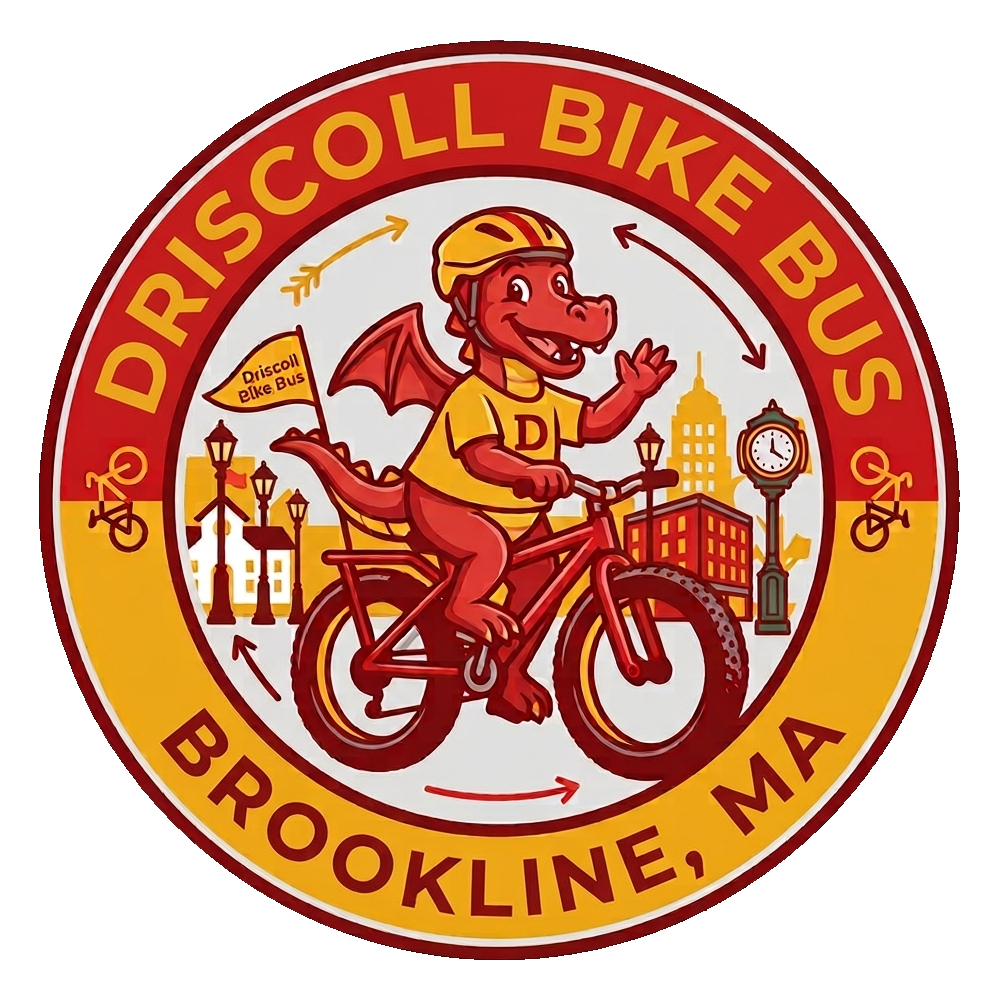

Driscoll
Bike Bus
Wednesday, October 7
Meet at the northeast corner of Griggs Park any time from 7:15. We leave at 7:30 and get to the bike racks by 7:45. You can join us at Washington Square at 7:38 instead if that's closer.